SVC视频传输差错恢复技术
1）网络视频应用的日益增长：电话会议，视频点播(VoD)，远程教育，流媒体及数字图书馆等,特别是以可视电视为代表的实时视频应用。 2）网络视频应用面临的主要问题：需求多样性：图像质量、时延、交互性等的不同要求；网络异构性：不同的带宽和服务质量保证(QoS)；终端多样性：不同的计算能力与存储、显示能力。 3）网络视频应用面临的主要问题：可分级视频编码(Scalable Video Coding, SVC)是提供码流鲁棒性与网络适应性的有效手段。
-
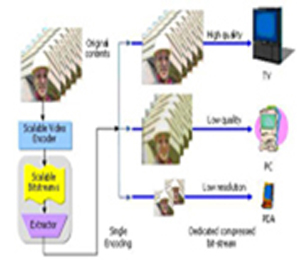
SVC编码原理及应用
-
SVC的特点
1)以H.264/AVC为编码核心 2)以hierarchical B pictures为时域分级方式 3)新的空域层间预测方式 4)层间纹理信息预测、层间运动信息预测、层间冗余信 息预测以及扩展的空域预测 5)提供了CGS/MGS/FGS三种质量分级方式 6)针对低延时情况下的视频应用，采用基于漏预测技术的AR-FGS
-
CGS下的基于失真度估计的差错掩盖算法
研究现状：目前对差错掩盖的研究主要针对单层编码，大体分为两类： 1)空域方式 基于DCT系数的内插算法、基于像素跨度准则的算法 2)时域方式 运动向量中值算法、边框匹配算法（MBA)
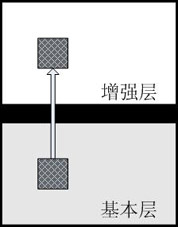
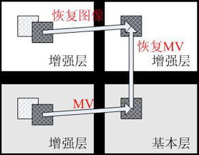
优点:基本层重建图像总是具有正确的内容 优点: 恢复图像质量较高缺点：基本层图像质量相对较低 缺点：丢失冗余无法恢复、运动过大时图像内容不准确 -
提出核心思想： 估计出两种方式掩盖后各自的失真度，选择失真度较小的方式进行实际的掩盖。
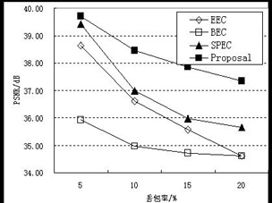
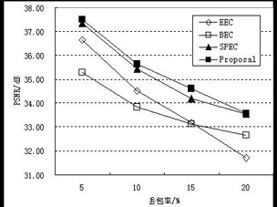
Salesman序列 QP为（30,2） Suzie序列 QP为（36,24） 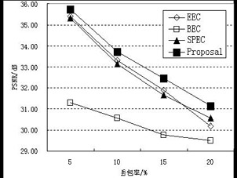
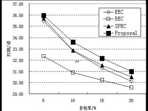
Mthr_dotr序列 QP为（40,20） Foreman序列 QP为（40,10） BEC算法 本文算法 AR-FGS中的漏因子自适应选择算法
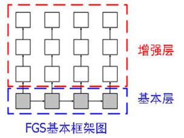
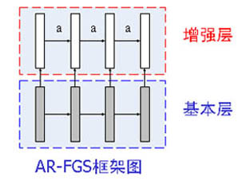
FGS虽然提供了精细的可伸缩能力，但由于缺乏增强层时域预测，导致编码效率较低。 AR-FGS核心思想：将增强层位平面经漏因子缩放后，与基本层图像加权，作为增强层预测参考 提出核心思想： 估计出两种方式掩盖后各自的失真度，选择失真度较小的方式进行实际的掩盖。 1)截断后的码率在帧级上平稳 2)可在编码同时进行截取
截取方式的实验结果
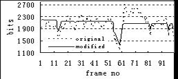
(a) 300kbps (b) 500kbps QCIF 序列 " Foreman " ，基本层码率为 135kbps ，总码率为 569kbps 基本层数据量与漏因子的分段线性关系
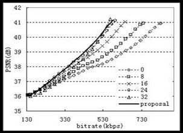
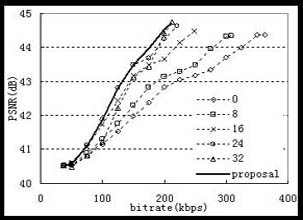
(a). Foreman (b). Miss_am